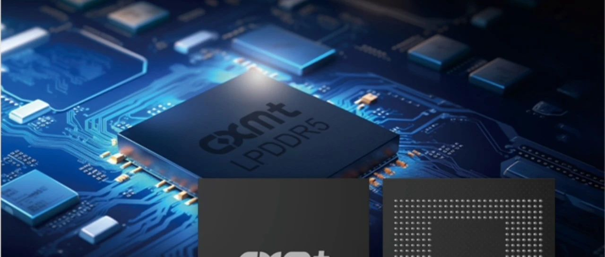
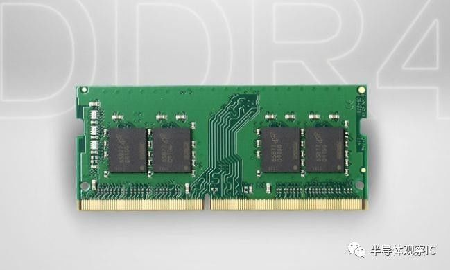
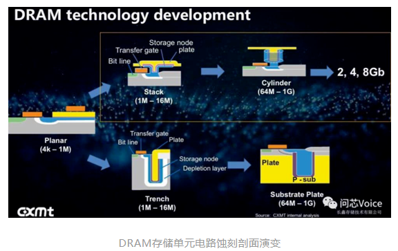

长鑫科技今天正式登陆科创板,合肥国资账面浮盈超一万亿。一个数字摆上来,把「国资投芯片」这事从抽象口号砸成了能算的账。

这笔账怎么来的:合肥国资旗下建投、产投等平台多年累计投入约300亿,押注长鑫这家做DRAM存储芯片的公司。今天上市首日股价暴涨450%,按大猫财经Pro、史大郎等媒体的测算,合肥国资持股市值站上一万亿,7名高管跻身10亿富翁,还有至少237名千万富翁。
说真的,一万亿这个数字好看,但我更在意的是它背后那道被撕开的口子。
DRAM是内存芯片,你手机、电脑里那条运行内存,跑的就是它。这东西看着不起眼,却是全球半导体里最卷也最垄断的赛道之一。全球供给长期被三家捏着——三星、海力士、美光,美韩占大头,三家合计市占率长期超过九成。
长鑫做的是什么?是国产DRAM里头第一个真正能往主流市场供货的。这事的难度不光在烧钱,卡在三个地方:
合肥国资押的不是一家公司,是冲这三道墙去的国产替代。

这笔万亿浮盈,真正值得讲的是合肥这套打法,长鑫只是它的一个出口。所谓合肥模式,核心一句话——国资作LP入股不控股,按市场规则做耐心资本。
合肥建投、产投这些国资平台,把钱以股权方式投进去,但不抢经营权、不派掌柜、不指手画脚,让专业团队干活。等企业上市或退出,国资带着回报撤或留,循环再投。京东方、蔚来、长鑫,合肥一路押过来,都是这套逻辑。
这套打法和传统补贴的区别在哪?补贴是撒钱不要回报,LP是投钱要回报还得担风险。长鑫这十年,中间满是烧钱、巨亏、被全方位封堵的至暗时刻,合肥国资没退,熬到了今天。

这十年里,美韩三寡头的垄断动是动过的,只是太慢。合肥这次把口子撕开,不是一夜之间的事,是整整十年。
讲到底,一万亿账面浮盈是数字,真要看的是这数字底下——一个国产替代的口子,被地方政府资本和一个技术团队,用十年硬撬开了。但账面归账面,存储芯片这场长跑,工艺、专利、周期,后面还有得熬。
万亿账面是一回事,国产替代这场长跑,才刚撕开第一道口。